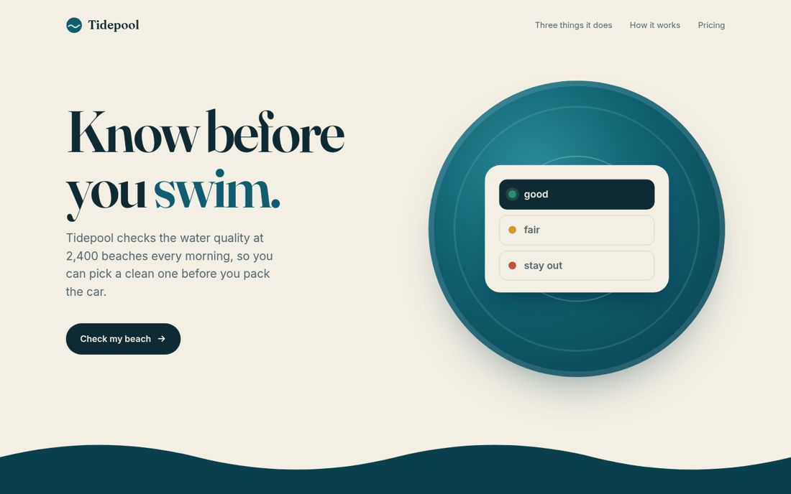
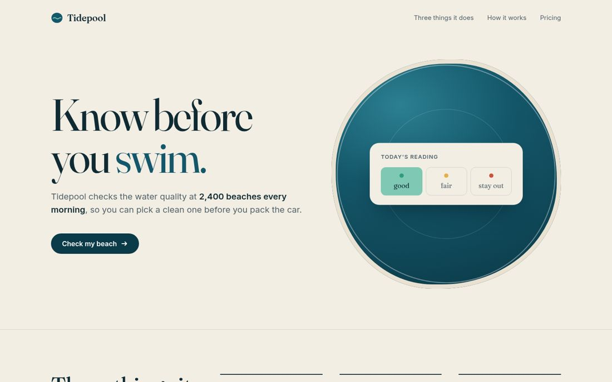

MengTo/Skills: test run, 2026-10-10
The same brief, built twice by Claude Code (Claude Opus 5.5) in a throwaway sandbox: a landing page for a made-up app, with fixed copy and the design left open. Measured in a browser at 1440 and 375 px. All results · The brief · How it is counted
Shares 4.0 of 4 with the no-skill page; its two builds share 4 of 4; 7.0 of 7 checks passed.
Both builds share the no-skill page's fonts, accent and background.
Build 1


Build 2


Click a picture for the whole page.
Fonts and colours
| Build 1 | Build 2 | |
|---|---|---|
| Headline font | fraunces | fraunces |
| Body font | inter | inter |
| Accent colour | ink | ink |
| Background | warm paper | warm paper |
Page checks
| Build 1 | Build 2 | |
|---|---|---|
| copy complete | pass | pass |
| nothing added | pass | pass |
| one h1 | pass | pass |
| button on the first screen | pass | pass |
| no sideways scroll on a phone | pass | pass |
| no script errors | pass | pass |
| no outside requests | pass | pass |